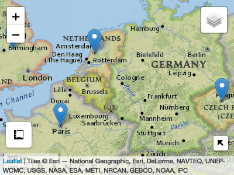
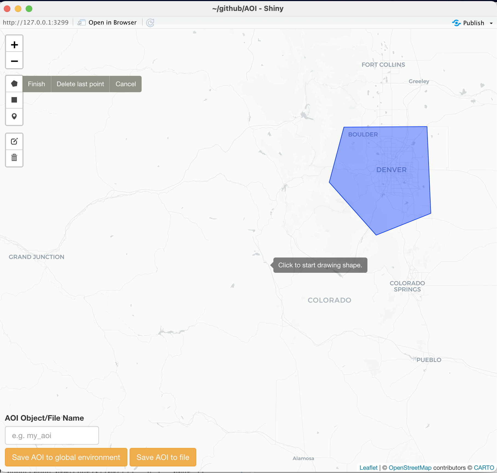

The purpose of AOI is to help create reproducible, programmatic boundaries for analysis and mapping workflows. The package targets five main use cases:
1. Flexable, term based geocoding
The aim of the AOI geooding service is to provide flexible, term-based geocoding via the OSM Notimun and Wikipedia APIs and the Wikipedia. If you have more ridgid addresses tidygeocoder is great!
Foward (from name to location)
Addresses
# Address with POINT representation
geocode('500 Linden St, Fort Collins, CO 80524', pt = TRUE)
#> Simple feature collection with 1 feature and 1 field
#> Geometry type: POINT
#> Dimension: XY
#> Bounding box: xmin: -105.0678 ymin: 40.59336 xmax: -105.0678 ymax: 40.59336
#> Geodetic CRS: NAD83
#> request geometry
#> 1 500 Linden St, Fort Collins, CO 80524 POINT (-105.0678 40.59336)Events
# Single events
geocode(event = 'D-day')
#> request title lat lon
#> 252854 D-day Normandy landings 49.33333 -0.5666667
# Multi-location events
geocode(event = 'Hurricane Harvey')
#> request all request.1 lat lon
#> 1 Hurricane+Harvey Windward Islands Windward Islands 13.400000 -61.16000
#> 2 Hurricane+Harvey Suriname Suriname 4.141303 -56.07712
#> 3 Hurricane+Harvey Guyana Guyana 4.841710 -58.64169
#> 4 Hurricane+Harvey Nicaragua Nicaragua 12.609016 -85.29369
#> 5 Hurricane+Harvey Honduras Honduras 15.257243 -86.07551
#> 6 Hurricane+Harvey Belize Belize 16.825979 -88.76009
#> 7 Hurricane+Harvey Cayman Islands Cayman Islands 19.703182 -79.91746
#> 8 Hurricane+Harvey Yucatán Peninsula Yucatán Peninsula 18.845000 -89.12556
#> 10 Hurricane+Harvey Louisiana) Louisiana) 30.870388 -92.00713
# Multi-location events with BBOX
geocode(event = 'Hurricane Harvey', bb = TRUE)
#> Simple feature collection with 1 feature and 0 fields
#> Geometry type: POLYGON
#> Dimension: XY
#> Bounding box: xmin: -92.00713 ymin: 4.141302 xmax: -56.07712 ymax: 30.87039
#> Geodetic CRS: NAD83
#> geometry
#> 1 POLYGON ((-92.00713 4.14130...Reverse (from location to term)
geocode_rev(c(37, -119))
#> place_id osm_type osm_id display_name
#> 1 282405492 relation 396492 Fresno County, California, United States
#> county state country country_code
#> 1 Fresno County California United States us
#> bb
#> 1 -120.9192485,-118.3612791,35.9066756,37.5861012. Consistent queries for domestic (USA) and international boundaries:
State / Multi-state
aoi_get(state = c("CO", "UT"))
#> Simple feature collection with 2 features and 14 fields
#> Geometry type: MULTIPOLYGON
#> Dimension: XY
#> Bounding box: xmin: -114.0529 ymin: 36.99246 xmax: -102.0415 ymax: 42.0017
#> Geodetic CRS: WGS 84
#> state_region state_division feature_code state_name state_abbr name
#> 1 4 8 1779779 Colorado CO Colorado
#> 2 4 8 1455989 Utah UT Utah
#> fip_class tiger_class combined_area_code metropolitan_area_code
#> 1 <NA> G4000 NA <NA>
#> 2 <NA> G4000 NA <NA>
#> functional_status land_area water_area fip_code
#> 1 A 268418796417 1185716938 08
#> 2 A 213355072799 6529973239 49
#> geometry
#> 1 MULTIPOLYGON (((-105.155 36...
#> 2 MULTIPOLYGON (((-111.5078 4...USA Counties
aoi_get(state = "TX", county = "Harris")
#> Simple feature collection with 1 feature and 14 fields
#> Geometry type: MULTIPOLYGON
#> Dimension: XY
#> Bounding box: xmin: -95.96073 ymin: 29.49734 xmax: -94.90865 ymax: 30.17061
#> Geodetic CRS: WGS 84
#> state_region state_division feature_code state_name state_abbr name
#> 1 3 7 1383886 Texas TX Harris
#> fip_class tiger_class combined_area_code metropolitan_area_code
#> 1 H1 G4020 288 <NA>
#> functional_status land_area water_area fip_code
#> 1 A 4421068052 182379558 48201
#> geometry
#> 1 MULTIPOLYGON (((-95.21642 2...World Countries
aoi_get(country = "Ukraine")
#> Simple feature collection with 1 feature and 63 fields
#> Geometry type: MULTIPOLYGON
#> Dimension: XY
#> Bounding box: xmin: 22.08561 ymin: 44.36148 xmax: 40.08079 ymax: 52.33507
#> Geodetic CRS: SOURCECRS
#> scalerank featurecla labelrank sovereignt sov_a3 adm0_dif level
#> 166 1 Admin-0 country 3 Ukraine UKR 0 2
#> type admin adm0_a3 geou_dif geounit gu_a3 su_dif subunit
#> 166 Sovereign country Ukraine UKR 0 Ukraine UKR 0 Ukraine
#> su_a3 brk_diff name name_long brk_a3 brk_name brk_group abbrev postal
#> 166 UKR 0 Ukraine Ukraine UKR Ukraine <NA> Ukr. UA
#> formal_en formal_fr note_adm0 note_brk name_sort name_alt mapcolor7
#> 166 Ukraine <NA> <NA> <NA> Ukraine <NA> 5
#> mapcolor8 mapcolor9 mapcolor13 pop_est gdp_md_est pop_year lastcensus
#> 166 1 6 3 45700395 339800 NA 2001
#> gdp_year economy income_grp wikipedia fips_10
#> 166 NA 6. Developing region 4. Lower middle income NA <NA>
#> iso_a2 iso_a3 iso_n3 un_a3 wb_a2 wb_a3 woe_id adm0_a3_is adm0_a3_us
#> 166 UA UKR 804 804 UA UKR NA UKR UKR
#> adm0_a3_un adm0_a3_wb continent region_un subregion
#> 166 NA NA Europe Europe Eastern Europe
#> region_wb name_len long_len abbrev_len tiny homepart
#> 166 Europe & Central Asia 7 7 4 NA 1
#> geometry
#> 166 MULTIPOLYGON (((31.786 52.1...USA and World Regions
World_asia = aoi_get(country = "Asia")
aoi_describe(World_asia)
#> type: POLYGON (47)
#> BBox Area: 101752122 [km^2]
#> Centroid: 85.79324 22.51263 [x,y]
#> Diminsions: 7617.139 4536.421 [width, height, in miles]
#> area: 31270874 [km^2]
#> Area/BBox Area: 30.7324 [%]
USA_south = aoi_get(state = "south")
aoi_describe(USA_south)
#> type: POLYGON (16)
#> BBox Area: 5360056 [km^2]
#> Centroid: -90.81484 32.51755 [x,y]
#> Diminsions: 1842.137 1120.732 [width, height, in miles]
#> area: 2399422 [km^2]
#> Area/BBox Area: 44.76487 [%]3. Creating flexible AOIs from locations and bounding dimensions.
Place Name and diminsions
# 100 square mile region around Longs Peaks
aoi_get(list("Long Peaks", 10, 10))
#> Simple feature collection with 1 feature and 0 fields
#> Geometry type: POLYGON
#> Dimension: XY
#> Bounding box: xmin: 101.5569 ymin: 3.069709 xmax: 101.702 ymax: 3.214636
#> Geodetic CRS: WGS 84
#> geometry
#> 1 POLYGON ((101.5569 3.069709...Location and Diminsions
# 200 square mile region around 37,-119
aoi_get(list(37, -119, 20, 10))
#> Simple feature collection with 1 feature and 0 fields
#> Geometry type: POLYGON
#> Dimension: XY
#> Bounding box: xmin: -119.0907 ymin: 36.85507 xmax: -118.9093 ymax: 37.14493
#> Geodetic CRS: WGS 84
#> geometry
#> 1 POLYGON ((-119.0907 36.8550...Event and Diminsions
# 10,000 square mile region around Normandy Landings
aoi_get(list("D-day", 100, 100))
#> Simple feature collection with 1 feature and 0 fields
#> Geometry type: POLYGON
#> Dimension: XY
#> Bounding box: xmin: 1.955047 ymin: 41.91365 xmax: 3.925122 ymax: 43.36293
#> Geodetic CRS: WGS 84
#> geometry
#> 1 POLYGON ((1.955047 41.91365...4. View and Draw
NOTE: The following functions require leaflet, shiny and leaflelt.extras. Since these are Suggested Dependencies you will need to install them yourself in warnings appear.
Sometimes it is useful to view the created AOIs. aoi_map offers a quickly formatted leaflet map (not all that dissimilar from mapview so this may retire).
AOI = geocode(location = c("Paris", "Amsterdam", "Prague", "England"), pt = TRUE)
aoi_map(AOI, returnMap = TRUE)
Alternatively sometimes users need very specific AOIs that are not POINTs, bounding boxes, or fiat boundaries. For this AOI provides aoi_draw() which allows users to interactively draw an Area of Interest (AOI) using a shiny app. Once an object is drawn and the “Save AOI” button pressed, a new sf object called ‘aoi’ will appear in your environment.
aoi_draw()
5. Programmatic way to interface with other R packages that require user defined AOIs or bounding boxes
The need for AOI’s is rampant in the r-spatial community. AOI plays nicely with the following non-exhaustive list helping users be to the meat of their utilities without getting hung up on boundary definition.
- ggmap
- opendap.catalog
- nhdplusTools
- elevatr
- terrainr
- climateR
- dataRetrivial
- soilDB
- nwmTools
- osmdata
- FedData
- hereR
- Please add more!
Installation:
remotes::install_github("mikejohnson51/AOI")Resources
See the package website vignettes showing the general workflow and functionality.
Contributing:
Thank you for considering a contribution!
- Contributions should be thoroughly tested with testthat.
- Code style should attempt to follow the tidyverse style guide.
- Please attempt to describe what you want to do prior to contributing by submitting an issue.
- Please follow the typical github fork - pull-request workflow.
- Make sure you use roxygen and run Check before contributing.
Other notes: - consider running lintr prior to contributing. - consider running goodpractice::gp() on the package before contributing. - consider running devtools::spell_check() if you wrote documentation.
Support:
AOI has been supported with funds from the UCAR COMET program (2018-2019) and the NSF Convergence Accelerator Project (2020).